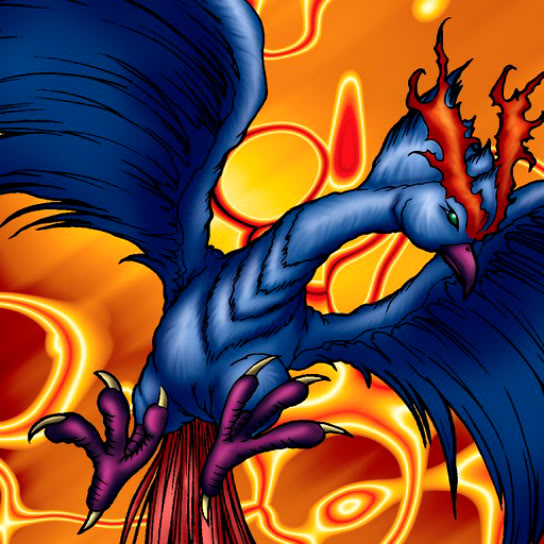

Blue-Winged Crown

STATS
ATK: 1600
DEF: 1200DECK COST
Deck Cost per Card: 28Fusion List (13 Possible Fusions)
- Blue-Winged Crown + Blast Juggler = Crimson Sunbird
- Blue-Winged Crown + Candle of Fate = Crimson Sunbird
- Blue-Winged Crown + Charubin the Fire Knight = Crimson Sunbird
- Blue-Winged Crown + Dark Rabbit = Garvas
- Blue-Winged Crown + Darkfire Dragon = Crimson Sunbird
- Blue-Winged Crown + Dragon Piper = Crimson Sunbird
- Blue-Winged Crown + Fire Eye = Crimson Sunbird
- Blue-Winged Crown + Firegrass = Crimson Sunbird
- Blue-Winged Crown + Fireyarou = Crimson Sunbird
- Blue-Winged Crown + Flame Swordsman = Crimson Sunbird
- Blue-Winged Crown + Flame Snake = Crimson Sunbird
- Blue-Winged Crown + Hinotama Soul = Crimson Sunbird
- Blue-Winged Crown + Kanan the Swordmistress = Punished Eagle